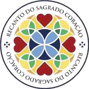
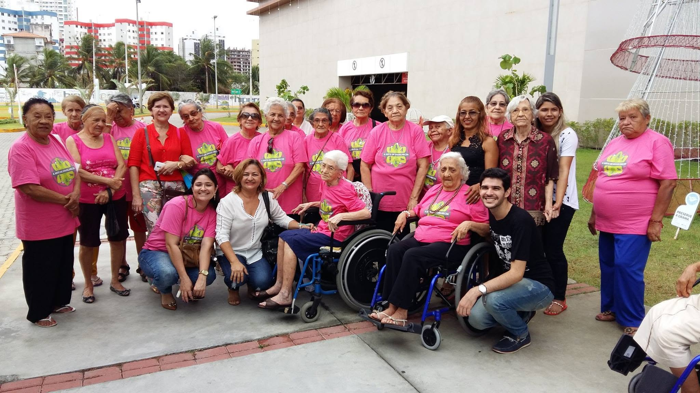
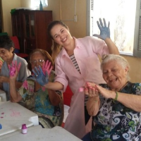
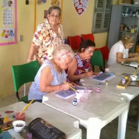
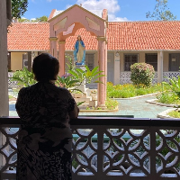
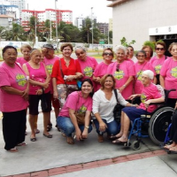
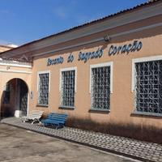

Associação de Assistência Social Catarina Labouré
Cuidar, acolher e proporcionar dignidade às nossas idosas é a nossa missão.
Conheça nosso trabalho
O Recanto do Sagrado Coração é uma Instituição de Longa Permanência para Idosas (ILPI), mantida pela Associação de Assistência Social Catarina Labouré.
Nossa missão é oferecer acolhimento, cuidado e atenção às idosas, valorizando suas histórias, respeitando sua dignidade e promovendo qualidade de vida.
Desde 1917, construímos um legado de amor e caridade no bairro Benfica. Aqui, cada moradora encontra um lar seguro, cuidado especializado e o carinho de quem acredita na força da solidariedade.
Entre em contatoNosso compromisso é cuidar com amor, respeito e dedicação.
Carinho e atenção em cada gesto.
Um ambiente de respeito e carinho.
Respeito à história de cada idosa.
Compromisso com o próximo.





Planejamento de cardápios balanceados e acompanhamento nutricional individualizado.
Cuidados contínuos de saúde, administração de medicamentos e monitoramento diário do bem-estar.
Exercícios e tratamentos para manutenção da mobilidade, equilíbrio e prevenção de limitações físicas
Atividades cognitivas e educativas para estimular memória, atenção e aprendizado.
Acompanhamento integral focado no envelhecimento saudável, ativo e com qualidade de vida.
Atendimento voltado à comunicação, deglutição e qualidade de vida dos idosos.
Avaliação clínica regular, prevenção de doenças e acompanhamento contínuo da saúde.
Mantemos nossas portas abertas graças à solidariedade de pessoas e instituições que acreditam na transformação social. Escolha como você quer ajudar essa história